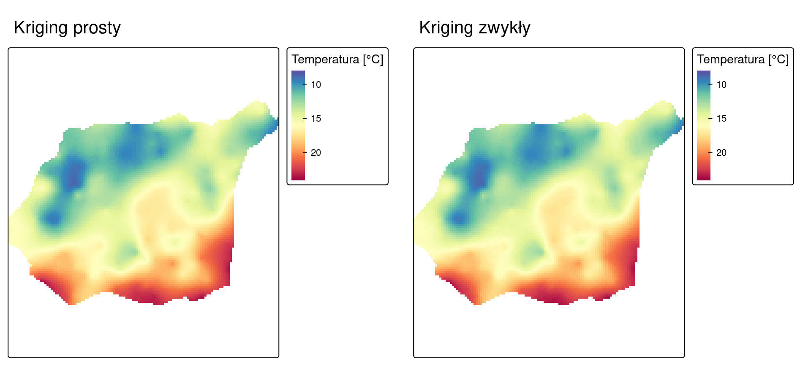
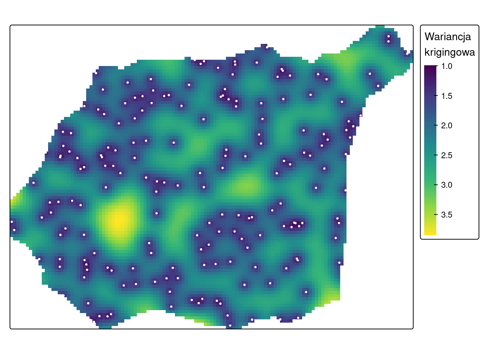
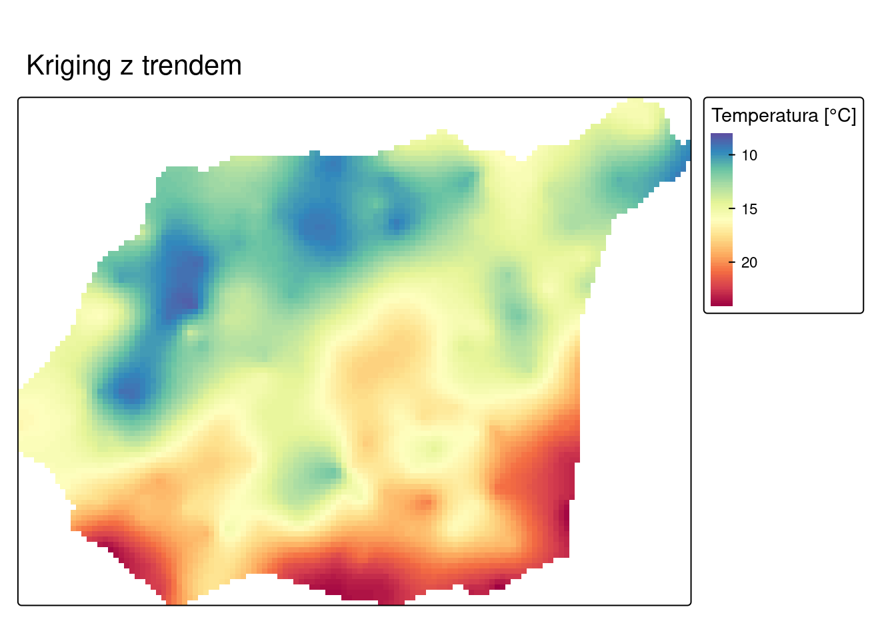

library(sf)
library(terra)
library(gstat)
library(tmap)
library(dplyr)10 Geostatystyczne metody estymacji
Czego się nauczysz
Po tym rozdziale potrafisz wykonać w R:
- przygotować parametry krigingu obiektem
gstat(), - wykonać kriging prosty z zadaną średnią (
beta), - wykonać kriging zwykły z sąsiedztwem szukania (
nmax), - wykonać estymację w siatce (
interpolate()) oraz w wybranych lokalizacjach (predict()), - przedstawić na mapie estymację i wariancję krigingową,
- zapisać wynik estymacji do pliku.
Rozumiesz i umiesz zinterpretować:
- czym różnią się trzy warianty krigingu w założeniu o średniej,
- czym jest sąsiedztwo szukania i dlaczego dotyczy wszystkich wariantów krigingu,
- co mierzy wariancja krigingowa i od czego zależy jej wartość,
- dlaczego wariancja krigingowa jest najmniejsza przy punktach pomiarowych,
- kriging z trendem — czytasz jego wynik, nie liczysz go samodzielnie.
Teoria: Najważniejsze informacje. Funkcje: Załącznik B. Słownik: Załącznik D.
10.1 Wprowadzenie
Rozdział 9 zakończył się dopasowanym modelem semiwariogramu — ciągłym opisem struktury przestrzennej zmiennej. Ten rozdział używa tego opisu do estymacji: szacowania wartości zmiennej w lokalizacjach, w których pomiaru nie wykonano.
Grupa metod, które to robią, nosi nazwę kriging. Tak jak IDW z Rozdział 8, kriging liczy średnią ważoną wartości punktów pomiarowych — ale wagi nie pochodzą z arbitralnie przyjętego wzoru, lecz z modelu semiwariogramu, czyli z opisu zmienności wyprowadzonego z danych. Stąd druga różnica: wynikiem krigingu są dwie wielkości, estymacja i wariancja krigingowa.
Kriging przebiega w pięciu krokach: semiwariogram empiryczny, dopasowanie modelu, obliczenie wag, estymacja, wizualizacja. Dwa pierwsze wykonaliśmy w Rozdział 9, trzeci wykonuje za nas funkcja, więc tutaj zaczynamy od czwartego. Ocena, jak dokładna jest uzyskana estymacja, należy do Rozdział 11.
10.2 Struktura obiektów: siatka i wynik krigingu
Estymacja w siatce działa tak samo jak interpolacja deterministyczna z Rozdział 8: siatką jest pusty SpatRaster o zadanej rozdzielczości, a funkcja interpolate() wypełnia go wartościami policzonymi przez model.
Wynik krigingu ma dwie warstwy:
| Warstwa | Zawartość |
|---|---|
var1.pred |
estymacja — oszacowana wartość cechy w komórce |
var1.var |
wariancja krigingowa — ocena niepewności tej estymacji |
Wariancja krigingowa jest względną oceną błędu (niepewności) estymacji w danym punkcie, wynikającą z niepewności związanej z rozmieszczeniem punktów pomiarowych oraz z przyjętym modelem, a nie z konkretnych wartości badanej cechy.
Konsekwencja tego sformułowania jest istotna i wrócimy do niej w interpretacji: wariancja krigingowa nie jest miarą błędu estymacji. Zależy od geometrii — od tego, jak gęsto i jak równomiernie rozmieszczone są punkty pomiarowe wokół szacowanej lokalizacji — oraz od parametrów modelu. Rzeczywisty błąd estymacji ocenia się walidacją, czym zajmuje się Rozdział 11.
10.3 Warianty krigingu w R
| Wariant | Założenie o średniej | Argument gstat() |
|---|---|---|
| kriging prosty (ang. simple kriging, SK) | średnia jest znana i stała na całym obszarze | beta = |
| kriging zwykły (ang. ordinary kriging, OK) | średnia jest nieznana; lokalne fluktuacje średniej wyznaczane są w ruchomym oknie | nmax = lub maxdist = |
| kriging z trendem (ang. kriging with a trend, KT) | średnia zmienia się systematycznie wraz z położeniem | formuła temp ~ x + y |
Sąsiedztwo szukania (ang. search neighborhood) to ograniczenie obliczeń do pewnej liczby najbliższych punktów pomiarowych (nmax) albo do punktów w zadanej odległości (maxdist). Jest to parametr obliczeń wspólny dla wszystkich wariantów krigingu, a nie cecha odróżniająca kriging zwykły od pozostałych. W krigingu zwykłym używa się go dodatkowo do wyznaczania lokalnej średniej, stąd jego szczególna rola w tym wariancie.
Pełne zestawienie funkcji — Załącznik B.
interpolate_gstat = function(model, x, ...) {
# x to tabela współrzędnych komórek siatki przekazana przez interpolate();
# remove = FALSE zachowuje kolumny x i y, potrzebne modelom używającym współrzędnych
v = st_as_sf(x, coords = c("x", "y"), crs = st_crs(model$data[[1]]$data), remove = FALSE)
p = predict(model, v, ...)
st_drop_geometry(p)
}10.4 Przykład: temperatura powietrza
Kroki analizy
- Dane i model semiwariogramu —
read.csv(),filter(),st_as_sf(),variogram(),fit.variogram(). - Siatka interpolacyjna —
rast(). - Kriging prosty —
gstat(beta = ),interpolate(),mask(). - Kriging zwykły —
gstat(nmax = ),interpolate(),mask(). - Wizualizacja estymacji i wariancji krigingowej —
tmap_arrange(). - Zapis wyniku —
writeRaster().
Kod spoza tych sześciu kroków jest objaśnieniem: nie trzeba go uruchamiać, żeby wykonać analizę.
Krok 1: dane i model semiwariogramu
Pracujemy na danych z Rozdział 9 i powtarzamy na nich dwa pierwsze kroki krigingu: semiwariogram empiryczny i dopasowanie modelu. Rozdział jest dzięki temu samodzielny — model można też wczytać z pliku zapisanego w poprzednim rozdziale (readRDS("out/model_semiwariogramu.rds")).
punkty = read.csv("data/punkty.csv") |>
filter(!is.na(temp)) |>
st_as_sf(coords = c("x", "y"), crs = "EPSG:2180")
granica = vect("data/granica.gpkg")
vario = variogram(temp ~ 1, locations = punkty)
model = fit.variogram(vario, vgm(psill = 10, model = "Sph", range = 3000, nugget = 0.5))
model model psill range
1 Nug 0.6755637 0.0
2 Sph 13.6466875 5479.9Krok 2: siatka interpolacyjna
siatka = rast(ext = granica, res = 90, crs = crs(granica))
siatkaclass : SpatRaster
size : 96, 127, 1 (nrow, ncol, nlyr)
resolution : 90, 90 (x, y)
extent : 745541.7, 756971.7, 712651.6, 721291.6 (xmin, xmax, ymin, ymax)
coord. ref. : ETRF2000-PL / CS92 (EPSG:2180) Krok 3: kriging prosty
Kriging prosty zakłada, że średnia jest znana i stała na całym obszarze, więc trzeba ją podać. Podajemy średnią z pomiarów.
Obiekt gstat() zbiera parametry estymacji: formułę (temp ~ 1 — zmienna bez zmiennych objaśniających), punkty pomiarowe, model semiwariogramu i wartość średniej.
sk_param = gstat(formula = temp ~ 1,
locations = punkty,
model = model,
beta = mean(punkty$temp))
sk = interpolate(siatka, sk_param, fun = interpolate_gstat, debug.level = 0)
sk_granica = mask(sk, granica)
sk_granicaclass : SpatRaster
size : 96, 127, 2 (nrow, ncol, nlyr)
resolution : 90, 90 (x, y)
extent : 745541.7, 756971.7, 712651.6, 721291.6 (xmin, xmax, ymin, ymax)
coord. ref. : ETRF2000-PL / CS92 (EPSG:2180)
source(s) : memory
names : var1.pred, var1.var
min values : 8.769768, 0.9865931
max values : 23.604351, 3.7707150 Wypis obiektu SpatRaster pokazuje dwie warstwy — var1.pred i var1.var — wraz z zakresem wartości każdej z nich. Zakres var1.pred to zakres oszacowań temperatury, zakres var1.var — zakres wariancji krigingowej.
Objaśnienie — poza ścieżką zadania
Ten sam obiekt gstat() wykonuje estymację nie tylko w siatce, lecz także w wybranych lokalizacjach. Wystarczy zamiast interpolate() użyć predict() i podać warstwę punktową.
nowe_lokalizacje = st_sfc(st_point(c(750000, 716000)),
st_point(c(753000, 719000)),
crs = "EPSG:2180") |>
st_as_sf()
predict(sk_param, nowe_lokalizacje, debug.level = 0)Simple feature collection with 2 features and 2 fields
Geometry type: POINT
Dimension: XY
Bounding box: xmin: 750000 ymin: 716000 xmax: 753000 ymax: 719000
Projected CRS: ETRF2000-PL / CS92
var1.pred var1.var geometry
1 14.71631 2.500479 POINT (750000 716000)
2 13.18594 2.115704 POINT (753000 719000)Wynik ma te same dwie kolumny co raster: var1.pred i var1.var. Różni się tylko postacią — jest warstwą punktową zamiast rastra.
Krok 4: kriging zwykły
Kriging zwykły traktuje średnią jako wartość nieznaną i wyznacza jej lokalne fluktuacje w ruchomym oknie. Zamiast beta podajemy więc rozmiar tego okna: nmax = 30 oznacza, że do estymacji każdej komórki użytych zostanie 30 najbliższych punktów pomiarowych.
ok_param = gstat(formula = temp ~ 1,
locations = punkty,
model = model,
nmax = 30)
ok = interpolate(siatka, ok_param, fun = interpolate_gstat, debug.level = 0)
ok_granica = mask(ok, granica)Krok 5: wizualizacja estymacji i wariancji krigingowej
Estymacje obu wariantów przedstawiamy w tej samej skali barw, żeby mapy dało się porównać.
skala_temp = tm_scale_continuous(values = "-brewer.spectral", limits = c(8, 24))
m_sk = tm_shape(sk_granica) +
tm_raster(col = "var1.pred", col.scale = skala_temp,
col.legend = tm_legend(title = "Temperatura [°C]")) +
tm_title("Kriging prosty")
m_ok = tm_shape(ok_granica) +
tm_raster(col = "var1.pred", col.scale = skala_temp,
col.legend = tm_legend(title = "Temperatura [°C]")) +
tm_title("Kriging zwykły")
tmap_arrange(m_sk, m_ok, ncol = 2)
Wariancję krigingową mapujemy osobno — jest wielkością innego rodzaju niż estymacja, więc wymaga własnej skali. Na mapę nanosimy punkty pomiarowe.
tm_shape(ok_granica) +
tm_raster(col = "var1.var",
col.scale = tm_scale_continuous(values = "viridis"),
col.legend = tm_legend(title = "Wariancja\nkrigingowa")) +
tm_shape(punkty) +
tm_dots(fill = "white", size = 0.15)
Krok 6: zapis wyniku
dir.create("out", showWarnings = FALSE)
writeRaster(ok_granica, "out/kriging_zwykly.tif", overwrite = TRUE)Interpretacja wyniku
Obie metody dały niemal identyczne estymacje. Kriging prosty szacuje temperaturę w przedziale 8.77–23.6 °C, kriging zwykły 8.75–23.6 °C. Średnia bezwzględna różnica między mapami wynosi 0.068 °C, a największa 0.385 °C.
Zgodność ta nie jest regułą — wynika z tego, że punkty pomiarowe są w tym obszarze gęste i rozmieszczone w miarę równomiernie, więc lokalna średnia wyznaczana przez kriging zwykły jest blisko średniej globalnej podanej krigingowi prostemu (15.27 °C). Przy rzadkiej lub nierównomiernej sieci pomiarowej różnice między wariantami rosną, a kriging prosty staje się wrażliwy na trafność przyjętej średniej.
Wariancja krigingowa układa się w regularny wzór związany z rozmieszczeniem punktów. Dla krigingu zwykłego mieści się w przedziale 0.987–3.871. Wartości najniższe występują w miejscach punktów pomiarowych i w ich bezpośrednim otoczeniu, najwyższe — tam, gdzie punktów brak, a więc przy brzegach obszaru i w lukach sieci pomiarowej. Na mapie wariancji widać wręcz rozmieszczenie sieci pomiarowej.
Jest to bezpośrednia konsekwencja definicji: wariancja krigingowa zależy od rozmieszczenia punktów pomiarowych i od przyjętego modelu, a nie od wartości badanej cechy. Komórka otoczona gęsto punktami ma niską wariancję krigingową niezależnie od tego, czy wartości tych punktów są do siebie podobne, czy nie. Nie wolno więc czytać mapy wariancji krigingowej jako mapy błędu estymacji — rzeczywisty błąd ocenia się przez porównanie wartości estymowanych z obserwowanymi, czyli walidacją (Rozdział 11).
Najniższa wariancja krigingowa w siatce nie spada do zera, lecz zatrzymuje się na poziomie 0.987. Nie wynika to z efektu samorodka: w samej lokalizacji pomiaru wariancja krigingowa wynosi zero, bo kriging w domyślnej parametryzacji gstat jest estymatorem dokładnym. Minimum na mapie bierze się z rozdzielczości siatki — żaden środek komórki nie pokrywa się dokładnie z punktem pomiarowym, a przy komórce 90 m środek najbliższej komórki może leżeć nawet 64 m od pomiaru. Na takim dystansie wariancja krigingowa przekroczyła już wartość efektu samorodka (0.676); wracamy do tego w pytaniu kontrolnym 6.
Objaśnienie — poza ścieżką zadania
Kriging z trendem zakłada, że średnia zmienia się systematycznie wraz z położeniem, i uwzględnia w estymacji współrzędne punktów. Wymaga osobnej ścieżki: semiwariogram liczy się dla formuły temp ~ x + y, czyli na odchyleniach od trendu liniowego, a nie na surowych wartościach.
# współrzędne muszą być dostępne jako kolumny, nie tylko jako geometria
punkty_xy = punkty |>
mutate(x = st_coordinates(punkty)[, 1],
y = st_coordinates(punkty)[, 2])
vario_kt = variogram(temp ~ x + y, locations = punkty_xy)
model_kt = fit.variogram(vario_kt, vgm(psill = 5, model = "Sph", range = 3000, nugget = 0.5))
model_kt model psill range
1 Nug 0.2822711 0.000
2 Sph 6.9271885 2193.736Semiwariancja progowa cząstkowa tego modelu (6.93) jest niemal dwukrotnie mniejsza niż w modelu bez trendu (13.65), a zasięg krótszy (2194 m wobec 5480 m). Oznacza to, że znaczną część zmienności przestrzennej przejął trend liniowy — temperatura zmienia się systematycznie w pewnym kierunku, a semiwariogram opisuje już tylko odchylenia od tego kierunku.
kt_param = gstat(formula = temp ~ x + y, locations = punkty_xy, model = model_kt)
kt_granica = mask(interpolate(siatka, kt_param, fun = interpolate_gstat, debug.level = 0),
granica)
tm_shape(kt_granica) +
tm_raster(col = "var1.pred", col.scale = skala_temp,
col.legend = tm_legend(title = "Temperatura [°C]")) +
tm_title("Kriging z trendem")
Estymacja mieści się w przedziale 8.6–23.88 °C.
10.5 Pytania kontrolne
1. Od czego zależy waga przypisywana punktowi pomiarowemu w krigingu?
Sprawdź odpowiedź
Od odległości oraz od podobieństwa wartości między sąsiednimi punktami, czyli od autokorelacji przestrzennej opisanej modelem semiwariogramu.
To odróżnia kriging od IDW (Rozdział 8), gdzie waga zależy wyłącznie od odległości, a tempo jej spadku ustala arbitralnie analityk wykładnikiem potęgowym. W krigingu tempo spadku wagi wynika z modelu dopasowanego do danych.
2. Czym kriging prosty różni się od krigingu zwykłego?
Sprawdź odpowiedź
Założeniem o średniej. Kriging prosty przyjmuje, że średnia jest znana i stała na całym obszarze — trzeba ją podać argumentem beta. Kriging zwykły traktuje średnią jako nieznaną i wyznacza jej lokalne fluktuacje w ruchomym oknie.
Oba należą do geostatystycznych metod interpolacji przestrzennej: ich parametry wynikają z modelu semiwariogramu, a wynik zawiera oszacowanie niepewności.
3. Czym jest sąsiedztwo szukania i którego wariantu krigingu dotyczy?
Sprawdź odpowiedź
To ograniczenie obliczeń do części punktów pomiarowych: określonej liczby najbliższych (nmax) albo punktów położonych w zadanej odległości (maxdist). Służy skróceniu obliczeń — estymacja każdej komórki wymagałaby inaczej rozwiązania układu równań dla wszystkich punktów zbioru.
Dotyczy wszystkich wariantów krigingu, nie tylko zwykłego. W krigingu zwykłym pełni dodatkową rolę, bo w tym samym oknie wyznaczana jest lokalna średnia.
4. Co mierzy wariancja krigingowa?
Sprawdź odpowiedź
Względną ocenę niepewności estymacji w danym punkcie, wynikającą z rozmieszczenia punktów pomiarowych oraz z przyjętego modelu semiwariogramu — a nie z konkretnych wartości badanej cechy.
Dlatego mapa wariancji krigingowej odzwierciedla geometrię sieci pomiarowej: niskie wartości w otoczeniu punktów, wysokie w lukach i przy brzegach obszaru. Dwie komórki o identycznym rozmieszczeniu sąsiadów mają tę samą wariancję krigingową, choćby wartości w tych sąsiadach były skrajnie różne.
5. Czy mapa wariancji krigingowej jest mapą błędu estymacji?
Sprawdź odpowiedź
Nie. Wariancja krigingowa nie korzysta z wartości badanej cechy, więc nie może mierzyć, o ile estymacja rozminęła się z rzeczywistością.
Błąd estymacji to różnica między wartością obserwowaną a oszacowaną, więc do jego policzenia potrzebne są obie. Uzyskuje się je metodami walidacji — przez wydzielenie zbioru testowego albo przez kroswalidację (Rozdział 11).
6. Dlaczego najniższa wariancja krigingowa na mapie nie wynosi zera, skoro w lokalizacji punktu pomiarowego kriging zwraca wartość zmierzoną?
Sprawdź odpowiedź
Ponieważ żaden środek komórki siatki nie pokrywa się dokładnie z punktem pomiarowym. Wariancja krigingowa spada do zera wyłącznie w samej lokalizacji pomiaru; już kilka metrów dalej jest wyraźnie dodatnia, a przy rozdzielczości siatki 90 m środek najbliższej komórki może leżeć nawet 64 m od pomiaru.
W tym rozdziale najniższa wariancja krigingowa w siatce wynosi 0.987. Nie jest to wartość efektu samorodka, która wynosi 0.676 — wariancja krigingowa przy punkcie pomiarowym rośnie z odległością od niego i szybko przekracza efekt samorodka.
7. Dla formuły
temp ~ x + ysemiwariogram ma mniejszą semiwariancję progową niż dlatemp ~ 1. Dlaczego?
Sprawdź odpowiedź
Ponieważ semiwariogram liczony jest wtedy na odchyleniach od trendu, a nie na surowych wartościach. Trend liniowy zależny od współrzędnych przejmuje część zmienności przestrzennej, więc tej części nie ma już w semiwariogramie.
Dla danych tego rozdziału semiwariancja progowa cząstkowa spada z 13.65 do 6.93, a zasięg z 5480 m do 2194 m.
10.6 Podsumowanie
| Metoda | Funkcja i argument | Co daje | Warunek poprawnego użycia |
|---|---|---|---|
| kriging prosty | gstat(beta = ) |
estymację przy znanej, stałej średniej | wartość beta trzeba podać; wrażliwy na jej trafność przy rzadkiej sieci pomiarowej |
| kriging zwykły | gstat(nmax = ) lub gstat(maxdist = ) |
estymację przy średniej wyznaczanej lokalnie | rozmiar okna podajemy razem z wynikiem |
| kriging z trendem | formuła temp ~ x + y |
estymację uwzględniającą systematyczną zmianę średniej z położeniem | wymaga semiwariogramu na tej samej formule; współrzędne jako kolumny |
| estymacja w siatce | interpolate(fun = interpolate_gstat) |
raster o dwóch warstwach | siatka SpatRaster; wynik przycinamy mask() |
| estymacja w lokalizacjach | predict() |
warstwę punktową o tych samych dwóch kolumnach | ten sam obiekt gstat() co dla siatki |
| wariancja krigingowa | warstwa var1.var |
niepewność wynikającą z geometrii sieci pomiarowej i modelu | nie jest miarą błędu estymacji — ten ocenia Rozdział 11 |
Trzy zasady, do których wracamy w kolejnym rozdziale:
- Wariant krigingu wybiera się przez założenie o średniej, nie przez sposób ograniczania obliczeń. Sąsiedztwo szukania (
nmax,maxdist) dotyczy wszystkich wariantów. - Wariancja krigingowa opisuje geometrię, nie trafność. Jej mapa pokazuje rozmieszczenie sieci pomiarowej; ocena błędu wymaga porównania z wartościami obserwowanymi.
- Formuła semiwariogramu i formuła estymacji muszą być identyczne. Model policzony dla
temp ~ 1nie pasuje do estymacjitemp ~ x + y.
10.7 Pełny kod analizy
Poniżej zebrany jest cały kod Kroków 1–6 w kolejności wykonania — do skopiowania do własnego skryptu zamiast przeklejania pojedynczych fragmentów. Nie ma w nim kodu objaśniającego: to dokładnie ta ścieżka, która prowadzi od danych wejściowych do pliku out/kriging_zwykly.tif.
library(sf)
library(terra)
library(gstat)
library(tmap)
library(dplyr)
interpolate_gstat = function(model, x, ...) {
# x to tabela współrzędnych komórek siatki przekazana przez interpolate();
# remove = FALSE zachowuje kolumny x i y, potrzebne modelom używającym współrzędnych
v = st_as_sf(x, coords = c("x", "y"), crs = st_crs(model$data[[1]]$data), remove = FALSE)
p = predict(model, v, ...)
st_drop_geometry(p)
}
punkty = read.csv("data/punkty.csv") |>
filter(!is.na(temp)) |>
st_as_sf(coords = c("x", "y"), crs = "EPSG:2180")
granica = vect("data/granica.gpkg")
vario = variogram(temp ~ 1, locations = punkty)
model = fit.variogram(vario, vgm(psill = 10, model = "Sph", range = 3000, nugget = 0.5))
model
siatka = rast(ext = granica, res = 90, crs = crs(granica))
siatka
sk_param = gstat(formula = temp ~ 1,
locations = punkty,
model = model,
beta = mean(punkty$temp))
sk = interpolate(siatka, sk_param, fun = interpolate_gstat, debug.level = 0)
sk_granica = mask(sk, granica)
sk_granica
ok_param = gstat(formula = temp ~ 1,
locations = punkty,
model = model,
nmax = 30)
ok = interpolate(siatka, ok_param, fun = interpolate_gstat, debug.level = 0)
ok_granica = mask(ok, granica)
skala_temp = tm_scale_continuous(values = "-brewer.spectral", limits = c(8, 24))
m_sk = tm_shape(sk_granica) +
tm_raster(col = "var1.pred", col.scale = skala_temp,
col.legend = tm_legend(title = "Temperatura [°C]")) +
tm_title("Kriging prosty")
m_ok = tm_shape(ok_granica) +
tm_raster(col = "var1.pred", col.scale = skala_temp,
col.legend = tm_legend(title = "Temperatura [°C]")) +
tm_title("Kriging zwykły")
tmap_arrange(m_sk, m_ok, ncol = 2)
tm_shape(ok_granica) +
tm_raster(col = "var1.var",
col.scale = tm_scale_continuous(values = "viridis"),
col.legend = tm_legend(title = "Wariancja\nkrigingowa")) +
tm_shape(punkty) +
tm_dots(fill = "white", size = 0.15)
dir.create("out", showWarnings = FALSE)
writeRaster(ok_granica, "out/kriging_zwykly.tif", overwrite = TRUE)